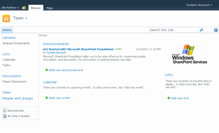

Team Site Definition |


|
|
|
Team Site Definition |
Adds a custom team site definition
The Team Site Definition is a standard preconfigured site definition which already contains a documents library, an announcements list, discussion list etc. This site definition can be used as a starting point to create a custom team site definition based on the default out of the box configuration which comes with WSS.


| Name | Description |
|---|---|
| General settings | |
| Name | Required Text. Specify the name of the folder which will be created in folder SiteTemplates. Limited to 255 characters. The name has to be unique within the project of this solution. It should not contain whitespaces or special characters. |
| Title | Required Text. Title of the site template as it appears in the selection of Create Site dialog. Limited to 255 characters. |
| ID | Required Number. Id of the site template. Should be unique on the farm and greater than 10000. |
| Description | Required Text. Longer description of the purpose of this site definition. |
| Category | Required Text. Title of the cateogry in which the site definition should appear in the Create Site dialog. Limited to 255 characters. |
| Advanced settings | |
| Hidden | Optional Boolean. If TRUE hides the site definition from the Create Site dialog. Creation of sites with this definition through code will be still possible. |
| RootWebOnly | Optional Boolean. If TRUE the site created from the configuration can only exist as the root Web site in a site collection. This attribute is not enforced in site templates (.stp files). |
| Visibility Feature Dependency | Optional Text. Optional Text. Used in a WebTemp*.xml file to hide the site definition configuration based on the activation state of the specified Feature. This attribute is not supported for Features with Web application scope. |
|
Disclaimer: The views and opinions expressed in this documentation and in SPSF are those of the authors and do not necessarily reflect the opinions and recommendations of Microsoft or any member of Microsoft. All trademarks, service marks, collective marks, copyrights, registered names, and marks used or cited by this documentation are the property of their respective owners.
SharePoint Software Factory, Version 4.1.2.2904, GPLv2, see http://spsf.codeplex.com for more information |